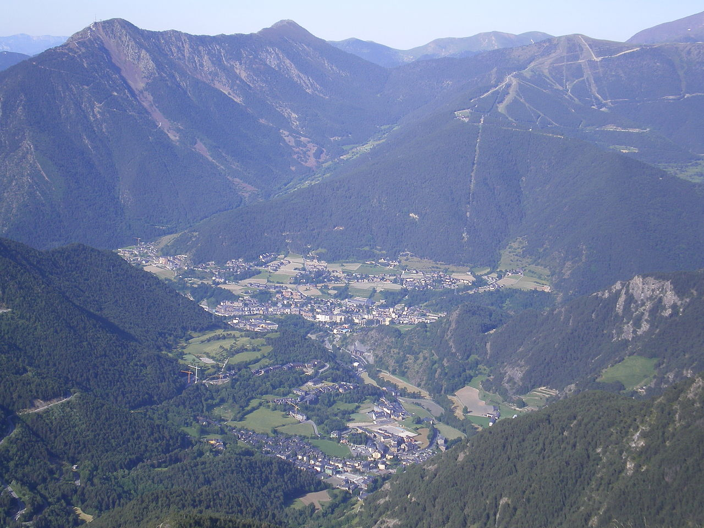

De fácil acceso con el coche ya que se encuentra a pie de carretera, El Coll de la Botella es un lugar privilegiado en la parroquia de La Massana, que se puede disfrutar tanto de día como de noche.
Situado a 2000 metros de altitud junto a la famosa escultura "Tormenta en una Taza de Té", de día es un mirador que permite disfrutar por un lado de las mejores vistas panorámicas de los valles del norte,
y por el otro lado podremos ver las montañas de España al otro lado del barranco de Solanyó. De hecho, podemos continuar conduciendo por esta misteriosa carretera perfectamente asfaltada, conocida comúnmente como camino de los contrabandistias,
ya que curiosamente lleva a un punto del territorio español en donde no hay carretera y sólo se puede conducir con todoterreno a través de escondidas pistas forestales. Por qué construír una carretera perféctamente asfaltada hasta este punto?
De noche, el Coll de la Botella se convierte en el mejor punto de Andorra para observar las estrellas en el cielo, gracias a la ausencia tanto de contaminación industrial como de contaminación lumínica.
El Coll de la Botella cuenta con un restaurante, en el que por cierto, a través de la página web de Vallnord podéis reservar también una cena temática para observar las estrellas mientras estáis cenando.
Para llegar hasta el Coll de la Botella, únicamente se ha de conducir a través de la carretera CG-4 hasta el kilómetro 13,4, y aparcar el coche.